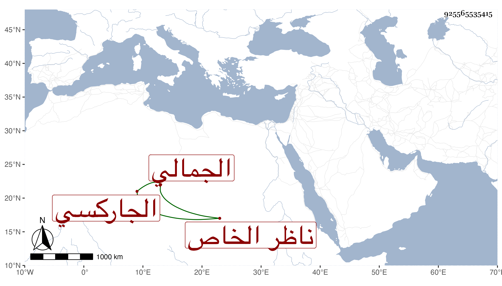

0902Sakhawi.DawLamic.ITO20230111-ara1.EIS1600.925565535415
Biography ID: 925565535415
1085
يشبك الجمالي ناظر الخاص الجاركسي أخو شاهين وسنقر الماضيين لا في النسب وزوج أم أولاده مولاه ابنة الكمالي بن البارزي . ممن حج غير مرة على إمرة الحاج وولي الحسبة مدة فشكرت سيرته في ذلك كله لعقله وتؤدته وتأدبه مع العلماء وملازمته للتلاوة والعبادة والتوجه لقراءة الحديث عنده والتفات الملك إليه بحيث عاده في مرضه ومكث عنده طويلا وكان على عمارة القرين بالقرب من الخطارة فعمل هناك مسجدا وحوضا وبستانا وخانا ، وسافر في التجاريد بل في الرسلية بهدية لملك الروم واستقر به أحد المقدمين في الزردكاشية الكبرى وله النظر على أوقاف مولاه بسائر الأماكن وهو الآن أحد رءوس الأمراء وخيارهم ممن انتمى إليه الجمال الصاني في ديوانه بعد أبي اليمن بن البرقي .
